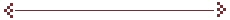

|
DASP Distributive Analysis Stata Package |
|
|

|
Services To install DASP
3.0 , execute what follows
Server 1 set more off
To install DASP
2.3 , execute what follows
Server 1 set more off net from http://dasp-two.vercel.app/modules/DASP_V2.3/dasp net install dasp_p1, force net install dasp_p2, force net install dasp_p3, force net install dasp_p4, force addDMenu profile.do _daspmenu
Server 2 set more off net from http://statapacks.work/dasp/modules/DASP_V2.3/dasp net install dasp_p1, force net install dasp_p2, force net install dasp_p3, force net install dasp_p4, force
Data of examples: download the data |